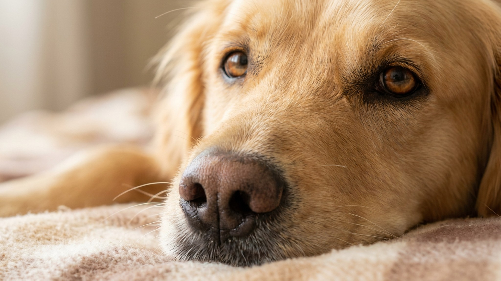

Вы берёте когтерез, тянетесь к лапе - и питомец мгновенно её выдёргивает. Или кусается. Или прячется под кровать при одном виде ножниц. Это не вредность и не плохой характер. Лапы для кошек и собак - самая уязвимая часть тела, и охранять их инстинктивно. Хорошая новость: спокойное отношение к осмотру вырабатывается за 2-3 недели регулярных коротких сессий.
🐾 Чтобы уход не держать в голове
AnimaLife напомнит, когда стричь когти, вычёсывать, купать и обрабатывать от паразитов, и заведёт дневник по вашему питомцу. Бесплатно.
Настроить напоминания → Настроить в MAX →
У вас iPhone? AnimaLife есть в App Store
У диких предков кошек и собак повреждённая лапа означала смерть: не убежишь, не поймаешь еду. Прикосновение к лапам запускает защитную реакцию даже у самого спокойного домашнего кота. Между пальцами много нервных окончаний - там чувствительнее, чем на спине.
К инстинкту добавляется личный опыт. Если питомца хоть раз больно стригли - задели живую часть когтя - он запомнил. Теперь когтерез: предмет, от которого надо держаться подальше. Та же история с ветеринарными осмотрами, когда лапу хватали резко и удерживали силой.
Суть метода - десенсибилизация. Начинаете с самого лёгкого и очень медленно повышаете уровень. Никаких форс-мажоров, никакого «сделаем быстро».
Самая распространённая ошибка: держать силой. Кажется, что если крепко зафиксировать, то быстро закончишь. На практике это обучает питомца сильнее сопротивляться в следующий раз.
Бывает, что за нежеланием давать лапу стоит боль, а не страх. Если питомец реагирует резко на лёгкое прикосновение к конкретному месту, хромает, часто лижет одну лапу или у него видны очень длинные скрученные когти - это повод обратиться к врачу. Не стоит пытаться приучать к осмотру, пока не разобрались, не болит ли.
Грумер тоже может помочь: профессионал знает, как зафиксировать животное без стресса. Полезно хотя бы один раз посмотреть, как это делают руки с опытом.
🐾 Заведите дневник ухода за питомцем
Вес, шерсть, обработки, прививки — всё в одном месте. А если что-то смущает, AI-ветеринар ответит круглосуточно и бесплатно.
Завести дневник → Завести в MAX →
У вас iPhone? AnimaLife есть в App Store
🐾 Понравился разбор?
Подпишитесь на канал — каждый день разбираем по одному тревожному симптому у кошек и собак: что в пределах нормы, а когда пора к врачу. Подпишитесь, чтобы не пропустить разбор, который может спасти здоровье вашего питомца.
Материал носит информационный характер и не заменяет очную консультацию ветеринара.